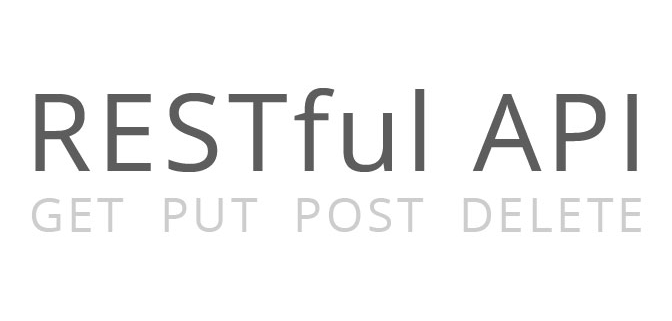
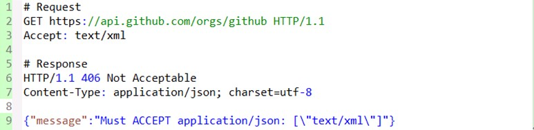

1. RESTとは何か

RESTの正式名称はRepresentational State Transferであり、中国語では「表述（編者注：通常は「表征」と訳される）性状態転移」という意味です。これは2000年にRoy Fieldingの博士論文で初めて登場しました。Roy FieldingはHTTP仕様の主要な執筆者の一人です。彼は論文の中で次のように述べています：「この論文の執筆目的は、アーキテクチャの原理に適合する前提で、ネットワークベースの応用ソフトウェアのアーキテクチャ設計を理解し評価し、機能が強く、性能が良く、通信に適したアーキテクチャを得ることです。RESTとは一連のアーキテクチャ制約条件と原則を指します。」アーキテクチャがRESTの制約条件と原則に適合する場合、私たちはそれをRESTfulアーキテクチャと呼びます。
REST自体は新しい技術、コンポーネント、サービスを生み出すわけではなく、RESTfulの背後にある理念は、Webの既存の特徴と能力を利用し、既存のWeb標準におけるいくつかのガイドラインと制約をより良く活用することです。REST自体はWeb技術の影響を強く受けていますが、理論的にはRESTアーキテクチャスタイルはHTTPに結びつけられているわけではありません。ただ、現在のところHTTPはRESTに関連する唯一のインスタンスです。したがって、ここで説明するRESTもHTTPを通じて実装されたRESTです。
2. 理解RESTful
RESTfulアーキテクチャを理解するには、まずRepresentational State Transferという語句が一体何を意味するのか、その各単語がどのような含意を持つのかを理解する必要があります。
以下ではRESTの原則に基づき、リソースを中心に議論を進め、リソースの定義、取得、表現、関連、状態遷移などの観点から、いくつかの重要な概念を列挙して説明します。
- リソースとURI
- 統一リソースインターフェース
- 资源的表述
- 资源的链接
- 状态的转移
2. 1 リソースとURI
RESTの正式名称は「表述性状態転移」ですが、それは一体何の「表述」を指すのでしょうか？実はそれはリソース（資源）を指します。どのようなものでも、参照する必要があれば、それはリソースです。リソースは実体（例えば電話番号）の場合もあれば、単なる抽象的な概念（例えば価値）の場合もあります。以下にリソースの例をいくつか示します：
- あるユーザーの携帯電話番号
- あるユーザーの個人情報
- 最も多くのユーザーが契約しているGPRSパケットプラン
- 2つの製品間の依存関係
- あるユーザーが申し込める割引プラン
- ある携帯電話番号の潜在価値
リソースを識別可能にするには、一意の識別子が必要です。Webにおいてこの一意の識別子はURI（Uniform Resource Identifier）です。
URIはリソースのアドレスと見なすこともできれば、リソースの名前と見なすこともできます。ある情報がURIを使って表現されていない場合、それはリソースとは言えず、リソースに関する一部の情報にすぎません。URIの設計は、アドレス可能性の原則に従い、自己記述的であり、形式的に直感的な関連性を与える必要があります。ここではGitHub Webサイトを例に、いくつかの良いURIを示します：
- https://github.com/git
- https://github.com/git/git
- https://github.com/git/git/blob/master/block-sha1/sha1.h
- https://github.com/git/git/commit/e3af72cdafab5993d18fae056f87e1d675913d08
- https://github.com/git/git/pulls
- https://github.com/git/git/pulls?state=closed
- https://github.com/git/git/compare/master…next
次にURI設計におけるいくつかのテクニックを見てみましょう：
- _ または - を使用してURIの可読性を高めます
かつてWeb上のURIは無機質な数字や意味のない文字列でしたが、現在では多くのWebサイトが _ や - を使って単語を区切り、URIをより人間らしく見せています。例えば、中国国内で有名なオープンソース中国コミュニティ（开源中国）のニュースアドレスはこのスタイルを採用しています。例：http://www.oschina.net/news/38119/oschina-translate-reward-plan
- 使用/来表示资源的层级关系
例えば上記の/git/git/commit/e3af72cdafab5993d18fae056f87e1d675913d08は多段階のリソースを表しており、gitユーザーのgitプロジェクトの特定のコミット記録を指します。また、例えば/orders/2012/10は2012年10月の注文記録を表すために使用できます。
- ?を使用してリソースをフィルタリングする
很多人只是把?简单的当做是参数的传递，很容易造成URI过于复杂、难以理解。可以把?用于对资源的过滤， 例如/git/git/pulls用来表示git项目的所有推入请求，而/pulls?state=closed用来表示git项目中已经关闭的推入请求， 这种URL通常对应的是一些特定条件的查询结果或算法运算结果。
- カンマ(,)またはセミコロン(;)は、同レベルのリソース間の関係を表すために使用できます。
時には同レベルのリソース間の関係を表す必要がある場合、カンマ(,)やセミコロン(;)を使用して区切ることができます。例えば、いつかGitHubが任意の2つのコミット記録間の特定ファイルの差分を比較できるようになった場合、URIとして/git/git /block-sha1/sha1.h/compare/e3af72cdafab5993d18fae056f87e1d675913d08;bd63e61bdf38e872d5215c07b264dcc16e4febcaを使用できるかもしれません。ただし、現在のGitHubは…を使用してこの処理を行っています。例えば/git/git/compare/master…nextです。
2. 2 統一リソースインターフェース
RESTfulアーキテクチャは統一インターフェース原則に従うべきです。統一インターフェースは、制限された事前定義の操作のセットを含み、どのようなリソースでも同じインターフェースを使用してリソースにアクセスします。インターフェースはGET、PUT、POSTなどの標準的なHTTPメソッドを使用し、これらのメソッドのセマンティクスに従うべきです。
HTTPメソッドのセマンティクスに従ってリソースを公開するならば、インターフェースは安全性と冪等性の特性を持つことになります。例えば、GETとHEADリクエストは安全であり、何回リクエストしてもサーバーの状態は変わりません。一方、GET、HEAD、PUT、DELETEリクエストは冪等であり、リソースに対して何回操作しても結果は常に同じで、後のリクエストが最初のリクエストよりも多くの影響を与えることはありません。
以下にGET、DELETE、PUT、POSTの典型的な使用法を示します：
GET
- 安全且幂等
- 获取表示
- 変更時に表現を取得する（キャッシュ）
- 200（OK） - レスポンスで送信されたことを示します
- 204（無内容）- リソースが空の表現を持つことを示します
- 301（Moved Permanently）- リソースのURIが更新されました
- 303（See Other）- その他（例：負荷分散）
- 304（not modified）- リソースは変更されていません（キャッシュ）
- 400（bad request）- 悪いリクエストを指す（例：パラメータエラー）
- 404（not found）- リソースが存在しません
- 406（not acceptable）- サーバーが要求された表現をサポートしていません
- 500 （internal server error）- 通用错误响应
- 503（Service Unavailable）- サーバーが現在リクエストを処理できません
POST
- 安全ではなく、冪等でもない
- サーバー管理（自動生成）のインスタンス番号を使用してリソースを作成する
- 创建子资源
- リソースの部分更新
- 変更されていない場合、リソースを更新しない（楽観的ロック）
- 200（OK）- 既存のリソースが変更された場合
- 201（Created）- 新しいリソースが作成された場合
- 202（Accepted）- 処理リクエストを受け付けたが、まだ完了していない（非同期処理）
- 301（Moved Permanently）- 资源的URI被更新
- 303（See Other）- その他（例：負荷分散）
- 400（bad request）- 悪いリクエストを指す
- 404（not found）- リソースが存在しません
- 406（not acceptable）- サーバーが要求された表現をサポートしていません
- 409（conflict）- 一般的な競合
- 412（Precondition Failed）- 前提条件が失敗しました（条件付き更新時の競合など）
- 415（unsupported media type）- 受け取った表現がサポートされていません
- 500 （internal server error）- 通用错误响应
- 503（Service Unavailable）- サービスが現在リクエストを処理できません
PUT
- 安全ではないが冪等
- クライアント管理のインスタンス番号を使用してリソースを作成する
- 置換によってリソースを更新する
- 変更されていない場合にリソースを更新する（楽観的ロック）
- 200（OK）- 既存のリソースが変更された場合
- 201（created）- 新しいリソースが作成された場合
- 301（Moved Permanently）- 资源的URI已更改
- 303（See Other）- その他（例：負荷分散）
- 400（bad request）- 悪いリクエストを指す
- 404（not found）- リソースが存在しません
- 406（not acceptable）- サーバーが要求された表現をサポートしていません
- 409（conflict）- 一般的な競合
- 412（Precondition Failed）- 前提条件が失敗しました（条件付き更新時の競合など）
- 415（unsupported media type）- 受け取った表現がサポートされていません
- 500 （internal server error）- 通用错误响应
- 503（Service Unavailable）- サービスが現在リクエストを処理できません
DELETE
- 安全ではないが冪等
- 删除资源
- 200（OK）- リソースが削除されました
- 301 （Moved Permanently）- 资源的URI已更改
- 303（See Other）- その他、例：負荷分散
- 400（bad request）- 悪いリクエストを指す
- 404（not found）- リソースが存在しません
- 409（conflict）- 一般的な競合
- 500 （internal server error）- 通用错误响应
- 503（Service Unavailable）- サーバーが現在リクエストを処理できません
次に、実践でよくある問題をいくつか見てみましょう：
- POSTとPUTをリソース作成に使用する場合の違いは何ですか？
POSTとPUTのリソース作成における違いは、作成されるリソースの名前（URI）をクライアントが決定するかどうかです。例えば、自分のブログ記事に「java」というカテゴリを追加する場合、生成されるパスはカテゴリ名 /categories/java になります。この場合はPUTメソッドを採用できます。ただし、多くの人はPOST、GET、PUT、DELETEをそのままCRUDに対応付けています。例えば、典型的なRails実装のRESTfulアプリケーションではそうしています。
これは、Railsがデフォルトでサーバー側で生成されたIDをURIとして使用するためであり、多くの人がRailsを通じてRESTを実践しているため、このような誤解が生じやすいのだと思います。
- クライアントが必ずしもこれらのHTTPメソッドをすべてサポートしているとは限らないのでは？
確かにそのような場合があります。特に、比較的古いブラウザベースのクライアントでは、GETとPOSTの2つのメソッドしかサポートできません。
実際には、クライアントとサーバーの両方がいくつかの妥協をする必要があるかもしれません。例えば、Railsフレームワークは、隠しパラメータ _method=DELETE を使って実際のリクエストメソッドを渡すことをサポートしています。また、BackboneのようなクライアントMVCフレームワークでは、_method を渡して転送したり、X-HTTP-Method-Override ヘッダーを設定したりしてこの問題を回避できます。
- 統一インターフェースは、特別なセマンティクスを持つメソッドを拡張できないことを意味しますか？
統一インターフェースはメソッドの拡張を妨げません。メソッドがリソースに対する操作について具体的で識別可能なセマンティクスを持ち、インターフェース全体の統一性を維持できる限り、拡張は可能です。
WebDAVのようにHTTPメソッドを拡張し、LOCK、UPLOCKなどのメソッドを追加しました。一方、githubのAPIはPATCHメソッドを使用したissueの更新をサポートしています。例えば:
PATCH /repos/:owner/:repo/issues/:number
ただし、PATCHのようなHTTP標準ではないメソッドについては、サーバー側でクライアントがサポートできるかどうかを考慮する必要があります。
- 統一リソースインターフェースはURIに対してどのような指針を与えますか？
統一リソースインターフェースは、標準のHTTPメソッドを使用してリソースを操作することを要求します。したがって、URIはリソースの名前を表すためだけに使用すべきであり、リソースの操作を含めるべきではありません。
平たく言えば、URIは動作（アクション）を使って記述すべきではありません。例えば、以下は統一インターフェースの要件に適合しないURIです：
- GET /getUser/1
- POST /createUser
- PUT /updateUser/1
- DELETE /deleteUser/1
GETリクエストがカウンターを増加させる場合、これは安全性に違反しますか？
安全性は、リクエストが副作用を生じないことを意味するわけではありません。例えば、多くのAPI開発プラットフォームはリクエストトラフィックを制限しています。GitHubも、認証されていないリクエストを1時間あたり60回に制限しています。
しかし、クライアントは副作用を求めてこれらのGETやHEADリクエストを送信しているわけではありません。副作用が生じるのはサーバー側の「独断」によるものです。
また、サーバー側は設計時に副作用を大きくすべきではありません。クライアントはこれらのリクエストが副作用を生じないと考えているからです。
- キャッシュを直接無視してもよいのか?
たとえ各動詞の本来の意図に従ってそれらを使用しても、キャッシュ機構を簡単に無効化することができます。最も簡単な方法は、HTTPレスポンスに次のようなヘッダーを追加することです： Cache-control: no-cache。しかし、同時に、効率的なキャッシュと再検証のサポート（Etagなどのメカニズムを使用する）も失うことになります。
クライアントにとっては、RESTスタイルのサービスのプログラムクライアントを実装する際にも、毎回表現を再取得しないように、既存のキャッシュ機構を十分に活用すべきです。
- レスポンスコードの処理は必要か?
HTTPのレスポンスコードはさまざまな場面に対応するために使用できます。これらのステータスコードを正しく使用することは、クライアントとサーバーがより豊かなセマンティクスを持つレベルで通信できることを意味します。
例えば、201（"Created"）レスポンスコードは、新しいリソースが作成されたことを示し、そのURIはLocationレスポンスヘッダーに含まれています。
もしHTTPステータスコードの豊富なアプリケーションセマンティクスを利用しないなら、再利用性の向上、相互運用性の強化、疎結合性の向上の機会を逃すことになります。
これらのいわゆるRESTfulアプリケーションがエラー情報を提供するためにレスポンスエンティティを必要とするなら、SOAPはまさにそのようなものであり、それを満たすことができます。
2. 3 リソースの表現
先ほど、クライアントはHTTPメソッドを通じてリソースを取得できると述べましたよね？いいえ、正確に言うと、クライアントが取得するのはリソースの表現（リプレゼンテーション）だけです。リソースが外界に具体的に現れる形態は、複数の表現（またはプレゼンテーション、表示）形式を持つことができます。クライアントとサーバー間で転送されるのもリソースの表現であり、リソース自体ではありません。例えば、テキストリソースはhtml、xml、jsonなどの形式を採用でき、画像はPNGやJPGで表示できます。
リソースの表現は、データとデータを記述するメタデータを含みます。例えば、HTTPヘッダーの「Content-Type」はそのようなメタデータ属性です。
では、クライアントはサーバーがどの表現形式を提供しているかをどうやって知るのでしょうか？
答えは、HTTPコンテンツネゴシエーションを通じて可能です。クライアントはAcceptヘッダーを使用して特定の形式の表現をリクエストでき、サーバーはContent-Typeを通じてクライアントにリソースの表現形式を伝えます。
GitHubを例にすると、ある組織リソースのJSON形式の表現をリクエストする場合は次のようになります：

もしgithubがXML形式の表現形式もサポートしていたら、結果は次のようになる:

次に、実践でよく見られる設計をいくつか見てみましょう：
URIにバージョン番号を含める
一部のAPIはURI内にバージョン番号を含めます。例えば：
- http://api.example.com/1.0/foo
- http://api.example.com/1.2/foo
- http://api.example.com/2.0/foo
もしバージョン番号をリソースの異なる表現形式と理解するなら、単一のURLを使用し、Acceptヘッダーで区別するべきです。再びGitHubを例にすると、そのAcceptの完全な形式は次のとおりです：application/vnd.github[.version].param[+json]
v3バージョンの場合、`Accept: application/vnd.github.v3` です。上記の例でも、同様に以下のヘッダーを使用できます。
- Accept: vnd.example-com.foo+json; version=1.0
- Accept: vnd.example-com.foo+json; version=1.2
- Accept: vnd.example-com.foo+json; version=2.0
URIの接尾辞を使用して表現形式を区別する
Railsフレームワークなどでは、`/users.xml` や `/users.json` を使って異なる形式を区別することができます。この方法はクライアントにとって確かにより直感的ですが、リソースの名前とリソースの表現形式を混同しています。個人的には、表現形式を区別するにはコンテンツネゴシエーションを優先して使用すべきだと思います。
サポートされていない表現形式をどう処理するか
サーバーが要求された表現形式をサポートしていない場合はどうすればよいのか？サーバーがサポートしていない場合、HTTP 406レスポンスを返し、そのリクエストの処理を拒否することを示すべきです。以下、githubを例として、XML表現のリソースをリクエストした結果を示します：

2. 4 リソースのリンク
RESTが標準的なHTTPメソッドを使用してリソースを操作することは知っていますが、その理由だけでRESTをCURD付きのWebデータベースアーキテクチャと理解するのはあまりにも単純すぎます。
このアンチパターンは、「ハイパーメディア・アズ・ジ・エンジン・オブ・アプリケーション・ステート（hypermedia as the engine of application state）」という中核的概念を無視しています。ハイパーメディアとは何でしょうか。
Webページを閲覧するとき、あるリンクからページへ移動し、別のリンクからまた別のページへ移動するのは、まさにハイパーメディアの概念を利用しています。つまり、リソース同士をリンクで結びつけるということです。
この目的を達成するには、表現形式の中にリンクを追加してクライアントを導くことが求められます。『RESTful Web Services』という書籍では、著者はこのリンクを持つ特性を「コネクティビティ（connectedness）」と呼んでいます。以下で具体的にいくつかの例を見てみましょう。
以下は、githubが特定の組織のプロジェクトリストを取得するリクエストを示しています。レスポンスヘッダーにLinkヘッダーが追加され、クライアントに次のページと最後のページのレコードへのアクセス方法を伝えているのがわかります。レスポンスボディでは、urlを使用してプロジェクトのオーナーとプロジェクトのアドレスにリンクしています。

また、次の例のように、注文を作成した後にリンクを通じてクライアントを支払い方法へ導くこともできます。

上記の例は、ハイパーメディアを使用してリソースのコネクティビティを高める方法を示しています。多くの人はRESTfulアーキテクチャを設計する際、美しいURIを探すことに多くの時間を費やし、ハイパーメディアを無視しています。したがって、「リソースのCRUD」に集中するのではなく、リソースの表現にリンクを提供することにもっと時間をかけるべきです。
2. 5 状態の遷移
上記の準備があれば、RESTにおける状態遷移を議論するのはとても理解しやすくなります。
ただし、まずREST原則の中のステートレス通信原則について議論しましょう。一見すると矛盾しているように見えます。ステートレスなら、なぜ状態遷移という概念があるのでしょうか。
実は、ここで言うステートレス通信原則は、クライアントアプリケーションが状態を持てないという意味ではなく、サーバーがクライアントの状態を保存すべきではないという意味です。
2.5.1 アプリケーション状態とリソース状態
実際には、状態はアプリケーション状態とリソース状態に区別されるべきであり、クライアントはアプリケーション状態を維持し、サーバーはリソース状態を維持します。
クライアントとサーバーのやり取りはステートレスでなければならず、各リクエストにはそのリクエストを処理するために必要なすべての情報が含まれている必要があります。
サーバーはリクエスト間でアプリケーション状態を保持する必要はなく、実際のリクエストを受け取ったときにのみ、サーバーはアプリケーション状態に注意を払います。
このステートレス通信原則により、サーバーと仲介者は独立したリクエストとレスポンスを理解できるようになります。
複数のリクエストにわたって、同じクライアントが同じサーバーに依存する必要もなくなり、高スケーラビリティと高可用性を備えたサーバーを実現しやすくなります。
しかし、ステートレス通信原則に違反する設計をしてしまうこともあります。例えば、Cookieを利用してサーバー側のセッション状態を追跡する場合です。よくあるのがJ2EEのJSESSIONIDです。
これは、ブラウザが各リクエストとともに送信するCookieが、セッション状態を構築するために使用されていることを意味します。
もちろん、Cookieに保存されている情報が、サーバーがセッション状態に依存せずに検証できる情報（認証トークンなど）であれば、そのようなCookieはREST原則に適合します。
2. 5.2 アプリケーション状態の遷移
状態遷移はここまででよく理解できたと思います。「セッション」状態はリソース状態としてサーバーに保存されるのではなく、クライアントがアプリケーション状態として追跡します。クライアントのアプリケーション状態は、サーバーが提供するハイパーメディアの導きに従って遷移します。サーバーはハイパーメディアを通じて、現在の状態からどの後続状態に入ることができるかをクライアントに伝えます。
「次のページ」のようなリンクは、この状態を進める役割を果たします——現在の状態から次の可能な状態にどう進むかを導くものです。
3. 总结
現在、広東XXXバージョン、XXXなどのプロジェクトでは従来のRPC、SOAP方式のWebサービスが使用されています。一方、移動南方基地XXXXプロジェクトのバックエンドは、JSON形式でのやり取りを採用していますが、依然としてRPCスタイルに属します。本稿では、リソースの定義、取得、表現、関連付け、状態遷移などの観点から、RESTfulアーキテクチャの背後にある概念を迅速に理解しようと試みます。RESTfulアーキテクチャは従来のRPC、SOAPなどの方式と理念において大きく異なります。本稿が皆さんのRESTの理解に役立つことを願っています。
クリックしてノートを共有
<p style="font-size:14px;">笔记需要是本篇文章的内容扩展！</p><br> <p style="font-size:12px;"><a href="../tougao.html" target="_blank">文章投稿，可点击这里</a></p> <p style="font-size:14px;"><a href="./runoob-user-test-intro.html" target="_blank">注册邀请码获取方式</a></p> <h3 class="text-muted"><i class="fa fa-info-circle" aria-hidden="true"></i> 分享笔记前必须<a href=".." class="runoob-pop">登录</a>！</h3> <p><a href="./runoob-user-test-intro.html" target="_blank">注册邀请码获取方式</a></p>